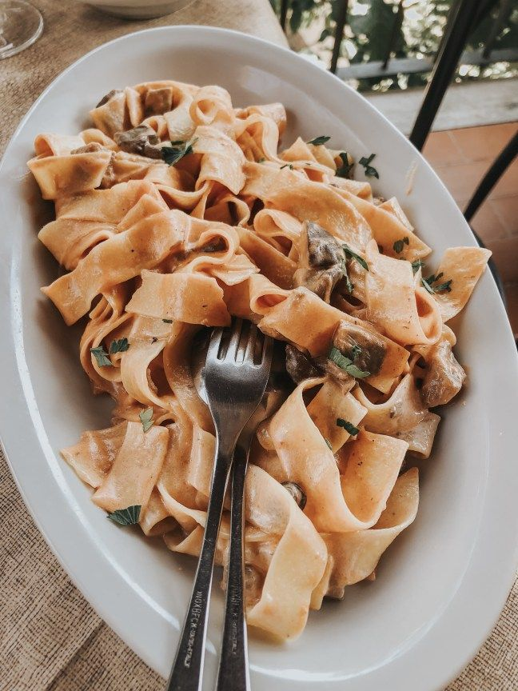
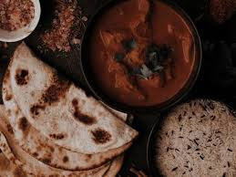
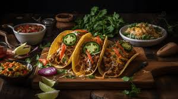

Exploring Global Cuisines

Embark on a tantalizing culinary journey around the world as we explore the diverse and delicious flavors of global cuisines. From the aromatic spices of Indian curries to the delicate balance of Japanese sushi, we'll discover the unique ingredients and time-honored cooking techniques that make each cuisine a treasure trove of gastronomic delights.
The Importance of Global Cuisines
Exploring global cuisines is more than just a feast for the senses; it's a window into different cultures and traditions. Each dish tells a story of its origin, reflecting the history, geography, and values of its people. By savoring these international flavors, we broaden our palates and our understanding of the world, creating a delicious bridge between cultures.
Popular Global Cuisines
- Italian: Renowned for its pasta, pizza, and fresh Mediterranean ingredients
- Japanese: Celebrated for sushi, ramen, and the art of umami flavors
- Indian: Famous for its aromatic spices, diverse regional specialties, and vegetarian options
- Mexican: Loved for its bold flavors, use of chili peppers, and vibrant street food culture
Signature Dishes from Around the World


